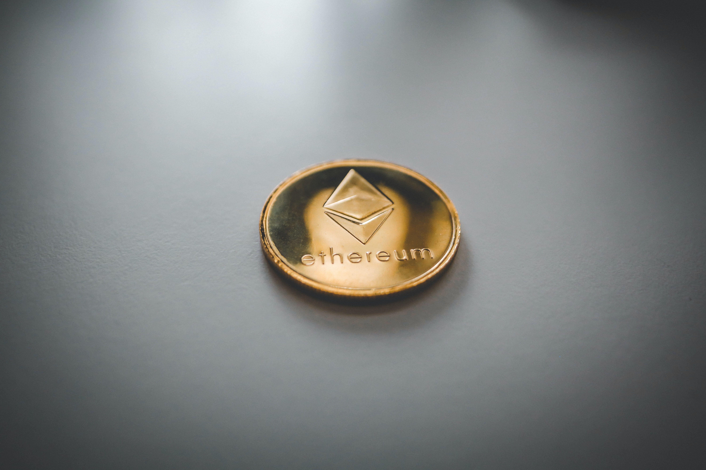

블록체인은 시대를 살아가기위해 필요한 기술이 될 것이다. 그러기위해서는 이더리움이 필요하다.

이더리움(Ethereum)은 블록체인 기술을 기반으로 스마트 계약 기능을 구현하기
위한 분산 컴퓨팅 플랫폼이다.
이더리움은 비트코인을 기반으로 만든 가장 대표적인
알트코인으로서, '비트코인 2.0'이라고도 부른다.
이더리움이 제공하는 이더(Ether)는
비트코인과 마찬가지로 암호화폐의 일종으로 거래되고 있다.
엄밀한 의미에서는 '이더리움'은 플랫폼이고, '이더'가 암호화폐이지만,
일반적으로 양자를 구별하지 않고 '이더리움'을 암호화폐의 이름으로 사용하기도 한다.
그럼 이제 우리는 이더리움내에 있는 앱들을 알아보자.
| SNX22 | DEFI |
| AAVE | DEFI |
| LINK | oracle |
| AXS | GAMING |